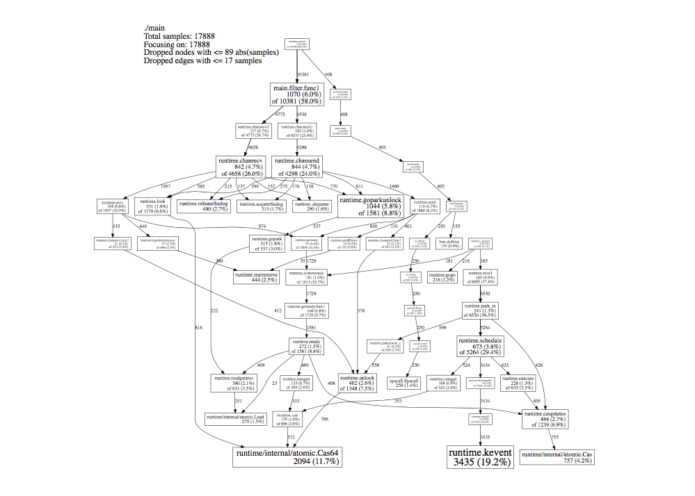
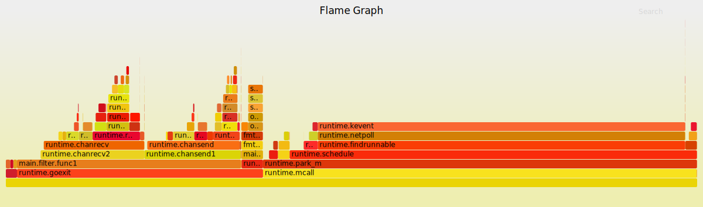
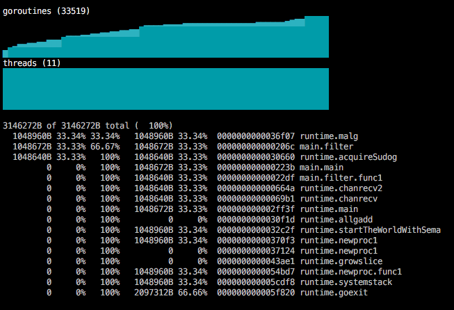
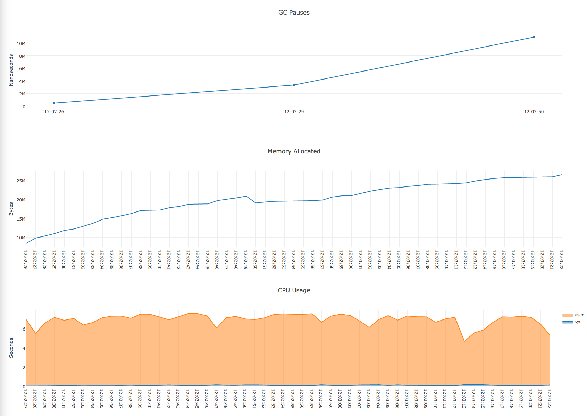

原文: A Short Survey of PProf Visualization Tools by Jordan Crabtree。
调试CPU相关的问题经常会涉及关于趋势的微妙问题。堆使用的峰值是否逐渐的增长？ routine在什么地方被调用，调用的频度如何？
一图胜千言。
一张图片就可以提供很多有用的上下文信息，否则如果用语言解释起来累的半死。将pprof可视化显示可以将有用的CPU统计数据与整个时间的上下文关联起来。
pprof 是什么？
PProf是一个CPU分析器( cpu profiler)， 它是gperftools工具的一个组件， 由Google工程师为分析多线程的程序所开发。
Go标准库中的pprof package通过HTTP的方式为pprof工具提供数据。
(译者注：不止这个包，runtime/pprof还可以为控制台程序或者测试程序产生pprof数据)
既然pprof数据通过HTTP提供，所以它需要在你的应用中运行一个web服务器。可以通过 import pprof的副作用(这里副作用 side-effect 是指引入这个包让其初始化，不是贬义词)， 这个包就可以在缺省的web服务器中注册它的handler，并补需要其它额外的操作。
下面是一个使用pprof长时间运行的例子：
|
|
使用 pprof

pprof能够借助grapgviz产生程序的调用图。默认情况下pprof基于对程序的30秒采样产生调用图。
- 图中的连线代表对方法的调用， 连线上的标签代表指定的方法调用的采样值(译者注：go tool pprof显示的是调用时间)。
- 方框的大小与方法运行的采样值的大小有关。
- 每个方框由两个标签：一个是方法运行的时间占比，一个是它在采样的堆栈中出现的时间占比(译者注： 前者你可以看成flat时间，后者看成cumulate时间)。
在Mac上安装工具:
|
|
|
|
译者注：
我并没有使用上面的工具，因为Go开发环境已经集成了pprof工具，所以你不需要安装gperftools工具，而且使用的命令和上面的命令不一样。
当然graphviz是必装的。
你可以通过下面的命令采集30s的数据并生成SVG调用图:
|
|
go-torch

go-torch是uber开发的一个工具，使用性能分析的专家Brendan Gregg (译者注：口口相传的性能分析的工具图就是来自他， 性能之巅一书的作者。看他的网站可以学到很多性能相关的知识)的脚本生成火焰图。
和pprof一样，它也采用30秒的采样数据生成火焰图。
- 栈帧(Stack frame,调用链)垂直堆叠，显示栈的深度
- 帧的宽度代表一个方法的运行的时间占比
- 如果一个方法被调用者调用，它会显示多次，分列在不同的调用者的堆栈上。(译者注：这点和pprof工具不同，pprof至显示一个方法的框，上面的时间标签是所有的调用者调用的时间）
- 颜色是任意的(arbitrary)， 横坐标根据字母顺序排列
安装
需要安装go-torch工具和brandangregg的火焰图生成脚本：
|
|
|
|
GOM

gom是一个实时的 curses-风格的命令行工具，由Google的工程师Jaana Dogan开发。
- 可以显示运行的goroutine和机器线程数
- 实时更新
- 出现可视化，gom还提供了基于文本的CPU和heap的数据
|
|
通过 import gom, gom同样可以注册额外的handler在缺省的服务器上，就像pprof一样。
|
|
|
|
Debug charts

Debug charts是由Marko Kevac开发的一个工具，使用plotly.js库来为运行的程序创建一个可视化的web视图。
- 运行在浏览器中
- 可视化gc pause，内存分配和cpu占用等信息
- 实时更新
通过import debugcharts,可以为缺省的web服务器注册额外的handler，就像pprof、gom一样。
|
|
然后访问 localhost:6060/debug/charts就可以显示相关的实时性能图表了。